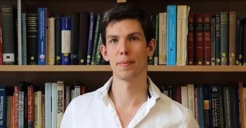

～2022費爾茲獎 塵埃落定～
昨天（7/5）在牛津讀博的兒子傳來一份學校的新聞稿，今年數學界的諾貝爾奬--費爾茲獎揭曉，四位得獎者之一的James Maynard出自牛津，這是繼2020年Roger Penrose摘下諾貝爾物理獎後，牛津在數理大獎再下一城。
https://www.ox.ac.uk/news/2022-07-05-oxford-mathematician-james-maynard-awarded-fields-medal-2022?fs=e&s=cl&fbclid=IwAR2zHV8qvSlgl1Mv1lwdYZGJ3ptvRkATECK-X7N7Cmt7D85KpBSBA6YERXI
2022年國際數學家大會於7月6日至14日舉行。本屆大會命運多舛，受到新冠疫情和國際政治局勢的嚴重干擾。原定的會議舉辦地是俄羅斯聖彼得堡，如今改為網絡會議。
此次得獎者有一些特殊之處：
首先 得獎者三位是歐洲白人，一位是韓國長大的美籍亞裔，沒有美國土生土長的白人。
其二 是產生了史上第二位女性得主：烏克蘭籍的Maryna Viazovska（前一位是英年早逝的Mirzakhani）
其三 是南韓誕生了史上第一位費獎得主：許埈珥
這位仁兄境遇奇特，青少年時期因為想當詩人而休學，大學時期因為找不著興趣，翹課太多而延畢，後來碰上了來校客座的日本數學大師廣中平佑（也是費獎得主）開啟了數學之路，改變了一生。
其四 今年有兩位獲獎者是研究組合學的（Maryna Viazovska與許埈珥）
這次獲獎的牛津青年數學家James Maynard是當代最傑出的解析數論專家之一，得獎前一致看好。
他26歲便成名。
2013年他用與張益唐（數學掃地僧）不同的方法證明了比張益唐的結果更強的關於素數間隔有界的定理：對於任意的正整數m，存在一個有限的長度L，使得有無窮多組m個素數，每組m個素數都落在一個長度為L的區間裡。
他將L的上限由張益唐的7000萬下降到600。
這一工作讓他獲得了2014年的拉馬努金獎。
當時，James Maynard還是名博士後研究員，沒什麼名氣。
差不多同時，UCLA的華裔天才數學家陶哲軒（費獎得主）也在同一問題上，得出類似的結果。
但在讀過James Maynard的證明方法後，陶哲軒認為其證明方法比自己的更為簡潔。
出於惜才之心，陶哲軒主動放棄了與他一同發表這項研究的機會，以免自己的名氣掩蓋了年輕數學家的成就。（謙虛大氣的Terence Tao）
James Maynard，又和另一位數學家合作攻下了一個困擾數學家們將近80年的難題——Duffin-Schaeffer猜想。
用有理數逼近無理數的問題。對於丟番圖逼近領域的數學家來說，這幾乎可以說是最基礎、最關鍵的問題之一。
Maynard還曾在2015年獲得倫敦數學會的懷特海獎
2016年獲得歐洲數學會獎
2020年獲得柯爾數論獎。
頒獎前他便已被普遍認為是今年菲爾茲獎的最大熱門，答案揭曉，實至名歸！
https://www.facebook.com/groups/695697124716309/permalink/1077305536555464/
